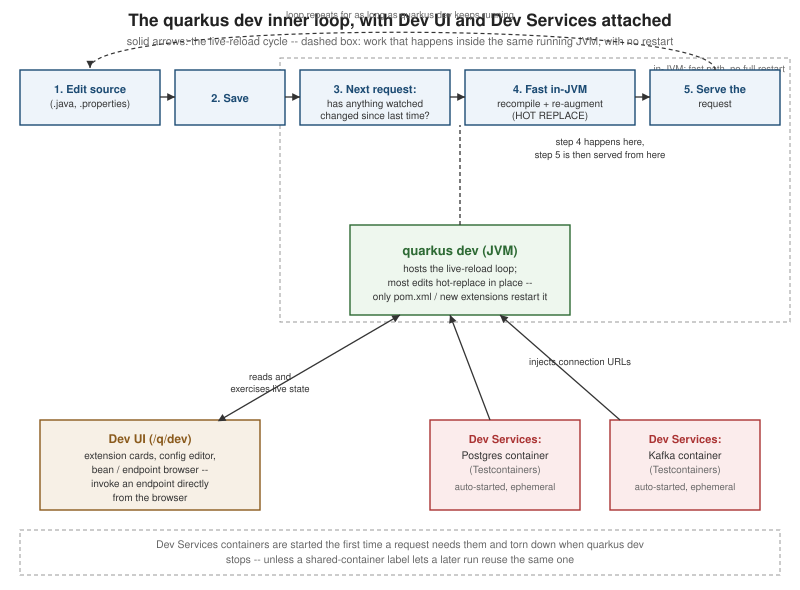

Developer Experience: Dev Mode, Dev UI, Dev Services
|
This content was generated with the assistance of AI and should be verified against the official documentation before being relied on in production. |
Quarkus’s reputation for developer experience rests on three pieces that work together rather than in isolation:
dev mode keeps a single JVM running and re-applies edits into it in place instead of restarting for every
change; the Dev UI gives that running JVM a browser-based control panel for everything on its classpath; and
Dev Services removes the "first, go install Postgres" step by starting the containers a project needs
automatically. This page covers all three, plus continuous testing, the dev-mode feature most responsible for
experienced Quarkus developers never leaving quarkus dev running in a terminal all day.
Dev mode: the live-reload loop
Dev mode is started with the Maven Wrapper or the Quarkus CLI, and stays running in the foreground of a terminal:
./mvnw quarkus:dev
# or, with the Quarkus CLI installed:
quarkus devUnlike a classic edit-compile-restart cycle, dev mode does not recompile the moment a file is saved. Instead, it waits for the next incoming HTTP request, checks whether any watched source file has changed since the request before it, and only then triggers a recompile. Concretely, for a request that arrives after a change:
-
Quarkus notices the request.
-
It checks the timestamps of the watched sources (
src/main/java,src/main/resources, and the build configuration) against the last build. -
If something changed, it recompiles just what changed and re-runs the affected part of the augmentation phase (the same build-time processing described on the architecture page in this section) inside the already running JVM.
-
Only then does it dispatch the request to the updated code.
This means the "reload" cost is paid by the first request after a save, not by the save itself, and — critically — most edits never restart the JVM at all:
| Change | What happens |
|---|---|
Editing a method body, adding a field, adding a REST endpoint method, editing |
HOT REPLACE: Quarkus redefines the affected classes in the running JVM and re-processes only the parts of augmentation that depend on them. No JVM restart; state held in non-reloaded singletons can survive. |
Adding or removing a dependency, changing |
Full RESTART: Quarkus tears down and re-boots the whole application in a fresh classpath, because augmentation decisions (which extensions are present, which build steps run) are only valid for a fixed set of dependencies. |
In practice this makes the everyday loop — edit a resource method, save, hit the endpoint again — feel close to instantaneous, while structural changes still pay a real (if still fast, compared to a production build) restart.
Remote dev mode
quarkus:dev assumes the JVM being edited and the terminal running the build are the same machine. Remote dev
mode relaxes that: a Quarkus application already running elsewhere — a container, a remote VM — can accept the
same live-reload pushes over the network. The remote instance is started with a shared password so the tunnel
cannot be hijacked by anything else on the network:
quarkus.live-reload.password=a-shared-secretand the local build is pointed at it instead of running its own dev-mode JVM:
./mvnw quarkus:remote-dev -Dquarkus.live-reload.url=http://remote-host:8080Saving a file locally then pushes the changed sources to the remote instance and triggers the same recompile-and-hot-replace cycle described above, but on that remote JVM — useful when the environment that matters (a real Kubernetes pod, a colleague’s machine) is not the one Maven is running on.
Debugging
Dev mode opens a JVM debug port automatically — port 5005 by default — with no extra -agentlib:jdwp flags
to remember. Any IDE can attach a remote-debug run configuration to localhost:5005 the moment quarkus dev is
up, and breakpoints hit exactly as they would against a normal JVM, including across a hot replace.
The Dev UI (/q/dev)
Starting dev mode also starts the Dev UI, a browser console reachable at http://localhost:8080/q/dev for as
long as dev mode is running — it is not part of a packaged application at all, as the "dev-mode vs. production"
section near the end of this page covers in more detail. The Dev UI is assembled dynamically from whatever
extensions are actually on the classpath, and is built from a few recurring kinds of page:
-
Extension cards — one card per extension on the classpath, each contributing its own dev-time tooling: the Hibernate ORM card can show generated SQL and let you reset the schema, the Scheduler card can list and trigger
@Scheduledmethods on demand, the RESTEasy/Quarkus REST card links straight to OpenAPI/Swagger UI, and so on — what appears is entirely a function of which extensions the project depends on. -
The configuration editor — a live, searchable browser of every configuration property the current application recognizes, its current value, its source, and whether it is build-time-fixed or runtime- overridable, editable from the page itself for the runtime-overridable ones; the configuration page elsewhere in this section covers
@ConfigMappingitself and is not duplicated here. -
Bean and endpoint browsers — one page listing every CDI bean discovered on the classpath (its scope, its declaring class, its qualifiers) and another listing every REST endpoint discovered, complete with a form to invoke an endpoint directly from the browser and inspect the response, without reaching for
curlor a separate HTTP client. -
The Dev Services panel — one entry per container Dev Services has started for this run, showing its image, the ports it exposes, and the exact connection properties (JDBC URL, bootstrap servers, and so on) that were injected into the running application — useful for connecting an external SQL client or Kafka console to the same ephemeral container the application itself is using.

Dev Services: zero-config ephemeral containers
Dev Services is the mechanism that starts backing services for you, in dev and test mode, so a project can be cloned and run without first installing and configuring a database by hand. Dev Services are built on Testcontainers, whose use of Docker is explained in Testcontainers Fundamentals. The discovery rule is the same for every supported service, and worth stating precisely because it is easy to get backwards:
|
Is a connection URL already configured for this service? If yes, Dev Services does nothing at all — it assumes an already-running instance is what you want and leaves it alone. If no, Dev Services starts (or reuses, via a shared-container label, an already-running one from a previous run) a matching container automatically and injects its connection properties into the running configuration. |
Quarkus ships Dev Services support for, among others:
-
Relational databases — PostgreSQL, MySQL, MariaDB, and others — via Testcontainers.
-
Kafka, via either a Testcontainers-based broker or Kafka Native, depending on the extension in use.
-
Redis.
-
Keycloak — starts with a pre-provisioned realm, client, and test users, ready for OIDC/OAuth testing without standing up a real identity provider.
-
Infinispan.
-
MongoDB.
-
Elasticsearch.
-
The Grafana OTel-LGTM observability stack — Loki, Grafana, Tempo, and Mimir bundled into one container, giving local tracing, metrics, and log correlation with nothing to install by hand.
Disabling Dev Services
A single service’s Dev Services support can be turned off explicitly, which is the usual way to force a project to talk to a real, already-provisioned instance without also configuring a URL:
quarkus.datasource.devservices.enabled=falseor turned off globally for every extension at once:
quarkus.devservices.enabled=falseCompose Dev Services
Rather than letting each extension start its own independent container, Quarkus can instead read a
compose.yml (or docker-compose.yml) already sitting in the project root and manage that — starting and
stopping the services it declares in step with dev/test mode, and wiring their exposed ports back into
configuration the same way plain Dev Services would. This is the better fit once a project’s local stack is
already described declaratively for other tooling (CI, a teammate’s manual docker compose up) and should not
be duplicated as ad hoc Dev Services configuration.
Podman support
Dev Services talks to whatever container runtime Testcontainers can find, which includes a rootless Podman socket transparently — nothing above needs Docker specifically, and no extra configuration is required beyond having a Podman machine/socket reachable the way Testcontainers expects.
Continuous testing
With quarkus dev running, pressing a single key in that terminal drives the test suite without ever switching
to the IDE’s own test runner:
| Key | Effect |
|---|---|
|
Re-runs only the tests affected by files changed since the last run, immediately after a save — this is the one developers leave running constantly, since it turns "save a file" into "see whether it broke a test" within a second or two. |
|
Re-runs the full test suite, regardless of what changed. |
|
Toggles break on failure: the moment a test fails, execution pauses there instead of finishing the run, giving you a window to attach a debugger at the exact point of failure rather than reproducing it separately. |
This is the primary reason experienced Quarkus developers keep a single quarkus dev terminal open all day
instead of running tests from the IDE or the command line separately: source edit, hot replace, and the relevant
tests re-running all happen from the same save, in the same loop described earlier on this page.
Dev-mode vs. production: differences to watch for
Dev mode optimizes for iteration speed, not for looking like production, and a few concrete differences are worth
knowing before drawing conclusions from something observed only in quarkus dev:
-
Performance is not representative. The file-watching, hot-replace bookkeeping, and extra dev-time logging that dev mode carries all cost real overhead; a
quarkus devstartup time or request latency is not a stand-in for what a packaged-runner.jar(or a native executable) will actually do in production. -
Some security defaults are relaxed. For example, the Dev UI itself has no authentication of its own and exposes bean names, endpoint lists, and configuration values — which is exactly why
/q/devis disabled by default outside dev mode, and should stay that way; explicitly re-enabling it in a production profile reintroduces that exposure. -
Dev Services containers are not the same environment as a provisioned production database. A container Testcontainers spun up moments ago, with default credentials and no data beyond whatever a test seeded, behaves differently under load, under network latency, and under real data volume than the already-provisioned instance a production deployment points at — a query, a migration, or a connection-pool setting that looks fine against a fresh ephemeral container deserves a second look against something closer to production before being trusted.